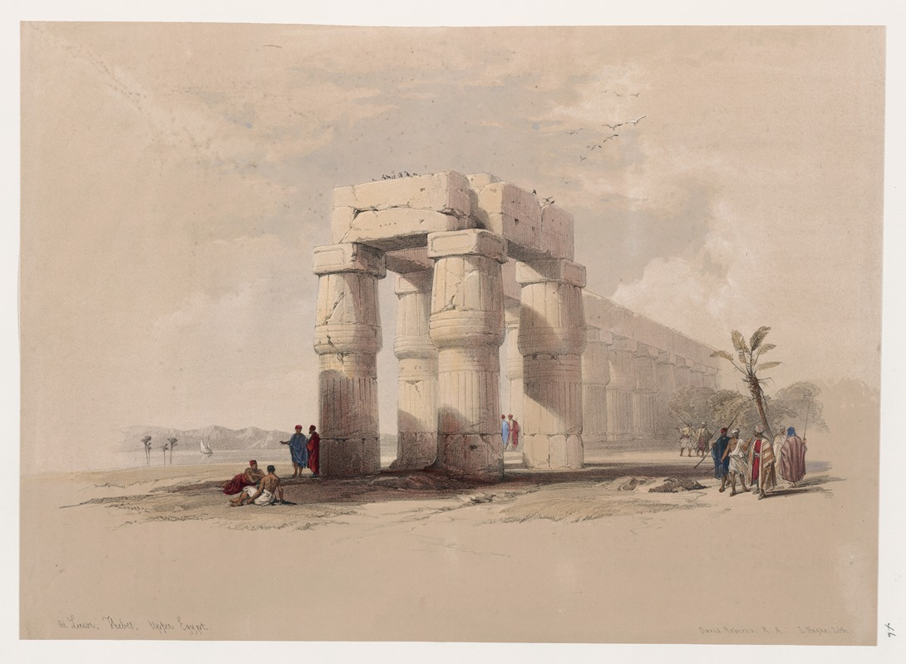
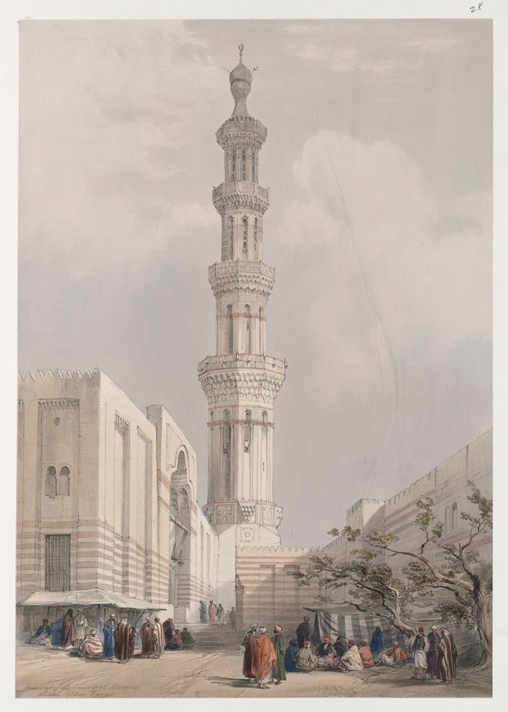
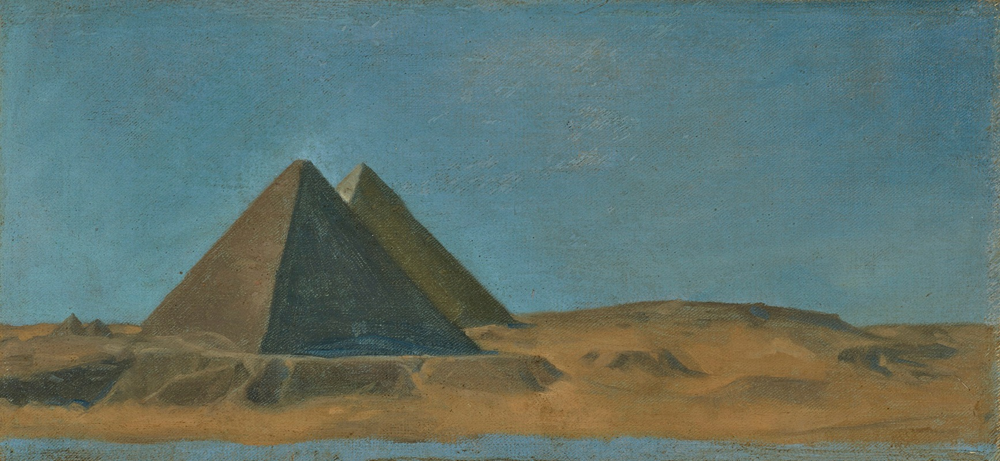
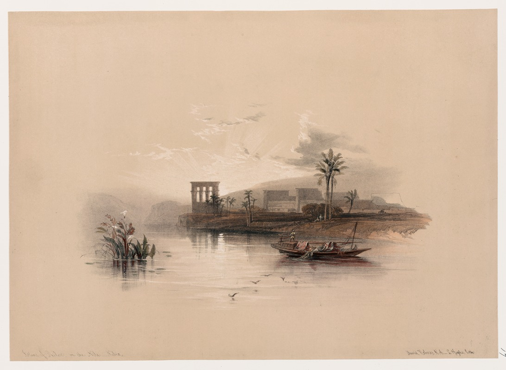
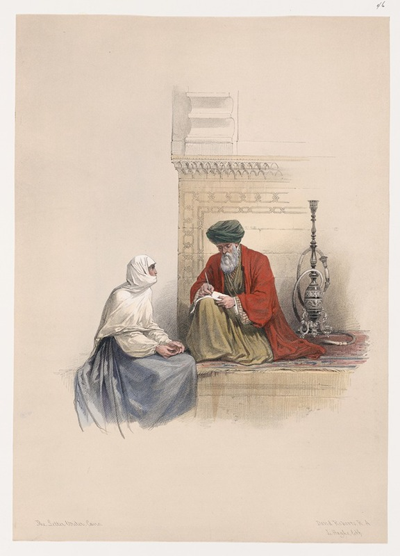
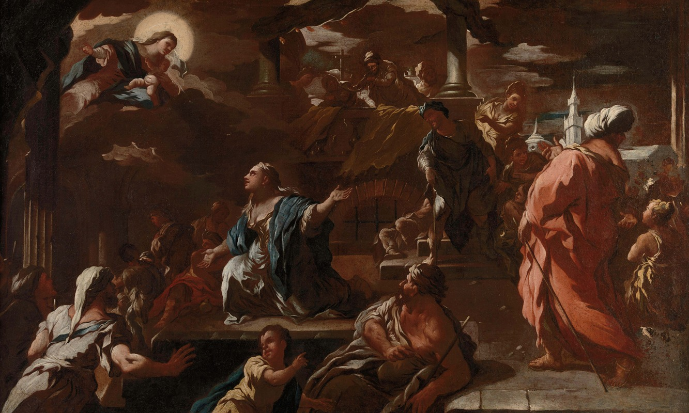

Mellan åren 1846 och 1849 publicerades David Roberts monumentala verk The Holy Land, Syria, Idumea, Arabia, Egypt, and Nubia, som innehöll detaljerade litografier från hans resor i Mellanöstern, däribland de storslagna vyerna över Luxor och Tebe i Övre Egypten. Roberts, som var en av de första brittiska konstnärerna att resa på egen hand längs Nilen, fångade de antika templens storhet med en nästan arkitektonisk precision som fascinerade den viktorianska publiken. Genom att placera små, mänskliga gestalter i traditionella dräkter intill de kolossala ruinerna och obeliskerna betonade han tidens gång och den enorma skalan i faraonernas arkitektur.De litografier som producerades utifrån Roberts skisser, ofta färglagda för hand, blev avgörande för att forma västvärldens romantiska bild av Egypten som ett land fyllt av mystik och försvunnen glans.
Under samma period som han dokumenterade templen i Luxor, skapade David Roberts en serie stämningsfulla vyer av ön File i Nilen, belägen i det forna Nubien. I sina litografier från åren 1846–1849 skildrade han Isistemplet som en arkitektonisk pärla som tycktes stiga direkt ur flodens vatten, omgiven av palmer och karga klippformationer. Roberts fascinerades särskilt av hur den grekisk-romerska arkitekturen smälte samman med de äldre egyptiska traditionerna på ön, och han återgav flitigt de rika relieferna och de eleganta pelargångarna, såsom "Trajanus kiosk", med stor omsorg för detaljer.Genom sitt skickliga bruk av ljus och skugga lyckades Roberts förmedla den stillhet och melankoli som vid mitten av 1800-talet vilade över denna heliga plats. Hans bilder av File blev särskilt betydelsefulla eftersom de bevarade synen av ön i dess ursprungliga miljö, långt innan de moderna dammbyggnaderna vid Assuan förändrade vattennivåerna och tvingade fram en flytt av hela tempelkomplexet.

I sin omfattande dokumentation av Egypten mellan 1846 och 1849 ägnade David Roberts stor uppmärksamhet åt den islamiska arkitekturen, däribland den magnifika minareten vid huvudmoskén i Siout (Asyut) i Övre Egypten. Till skillnad från många samtida konstnärer som enbart fokuserade på faraoniska ruiner, var Roberts djupt intresserad av det levande Egypten och dess urbana miljöer. I denna litografi framhåller han minaretens eleganta och komplexa form, som sträcker sig mot himlen över stadens tätbebyggda kvarter, och skildrar den med samma precision som han ägnade de antika templen.Genom att inkludera folklivet vid minaretens fot – med figurer i lokala dräkter och scener från stadens dagliga kommers – lyckades Roberts förmedla en känsla av Siouts betydelse som ett livligt handelscentrum längs Nilen. Ljussättningen i verket betonar arkitekturens textur och skapar en dramatisk kontrast mellan den vertikala minareten och de horisontella taklinjerna i den omgivande staden. Roberts återgivning av Siout blev ett viktigt bidrag till 1800-talets orientalism, då den erbjöd den europeiska publiken en sällsynt och respektfull inblick i den moderna islamiska kulturens estetiska rikedom i en region som annars främst var känd för sina forntidsminnen.
I serien av litografier från David Roberts resor i Egypten mellan 1846 och 1849 intar "Brevskrivaren i Kairo" en speciell plats, då verket fokuserar på en intim och vardaglig scen snarare än monumentala byggnadsverk. Roberts skildrar här en professionell brevskrivare, en figur som var central i det dåtida Kairos sociala liv, sittande på en gata omgiven av klienter som väntar på att få sina tankar och affärer förevigade på papper. Genom sin noggranna observation av dräkter, huvudbonader och den avslappnade kroppshållningen hos människorna lyckas han fånga en ögonblicksbild av det osmanska Egyptens sociala väv och kommunikationsvägar.Bakgrundens arkitektur med sina karakteristiska träsniderier, så kallade mashrabiya-fönster, och de smala gränderna i Kairo ger motivet en autentisk och stämningsfull inramning. Roberts, som ofta sökte efter det pittoreska, framställer brevskrivaren som en länk mellan tradition och bildning mitt i stadens myllrande kommers. Verket visar på hans förmåga att skifta perspektiv från de stora historiska perspektiven till den enskilda människans liv, vilket gav den viktorianska publiken en mer nyanserad bild av Orienten som en plats befolkad av individer med egna öden, snarare än bara en kuliss för antika ruiner.

I målningen "Les grandes pyramides" från 1865 skildrar den franske konstnären Jean Lecomte du Nouÿ de monumentala pyramiderna i Giza med den precision och det skarpa ljus som kännetecknar den akademiska orientalismen. Som elev till Jean-Léon Gérôme var Lecomte du Nouÿ djupt fascinerad av det egyptiska landskapets tidlösa karaktär och dess arkitektoniska underverk. I stället för att enbart fokusera på ruinernas förfall, framställde han pyramiderna som majestätiska och eviga symboler, ofta fångade i det hårda ökenljuset som framhäver deras geometriska perfektion mot den obarmhärtiga horisonten.Verket utfördes under en period då franska konstnärer sökte sig till Orienten för att finna nya motiv som förenade historisk exakthet med en känsla av mystik.
I målningen "The Vision of Saint Mary of Egypt" skildrar barockmästaren Luca Giordano den heliga Maria av Egyptens andliga omvändelse med den dramatik och snabbhet som gav honom smeknamnet "Fa Presto". Giordano, som var känd för sin förmåga att kombinera venetiansk kolorit med napolitansk energi, fångar här det ögonblick då den botfärdiga Maria, efter att ha levt som eremit i öknen, tar emot en gudomlig vision. Genom att använda svepande penseldrag och ett skulpturalt ljusspel lyfter han fram kontrasten mellan helgonets tärda gestalt och den himmelska glans som omger den visionära uppenbarelsen.